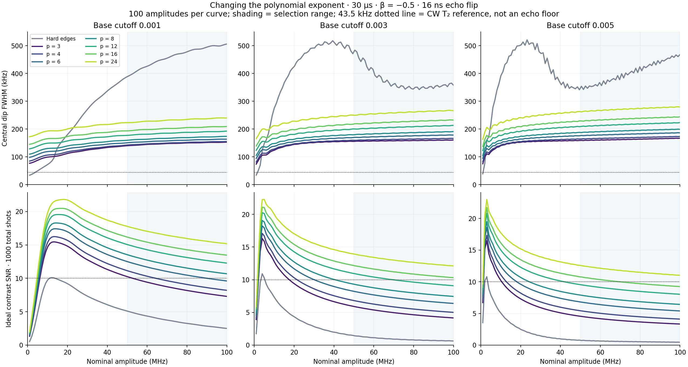
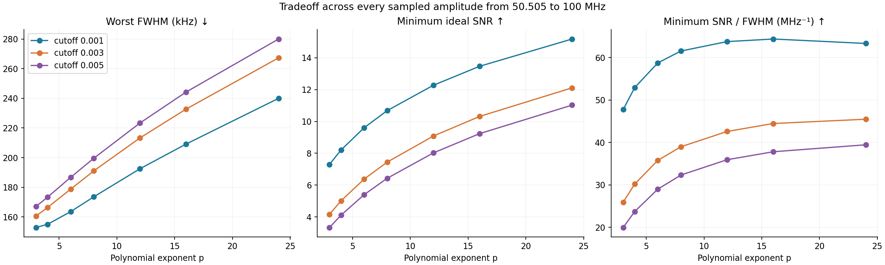
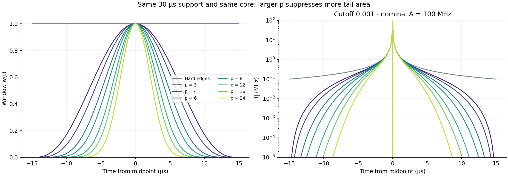
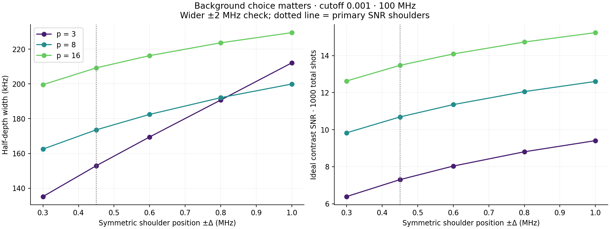
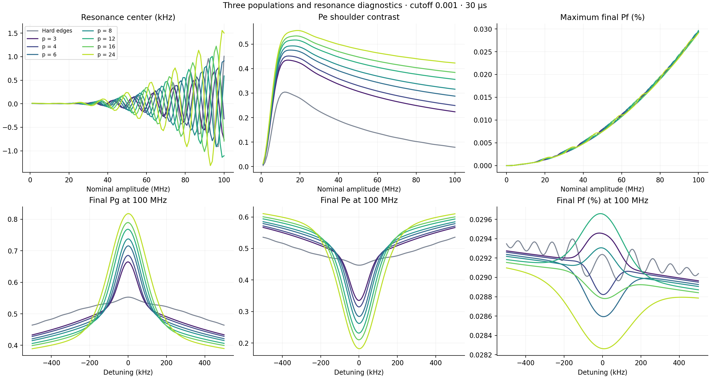
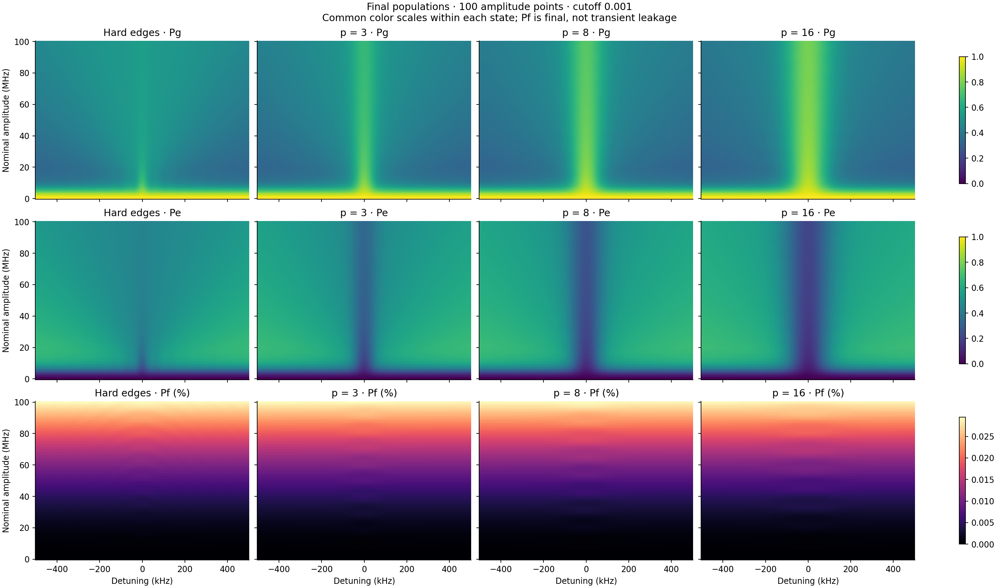
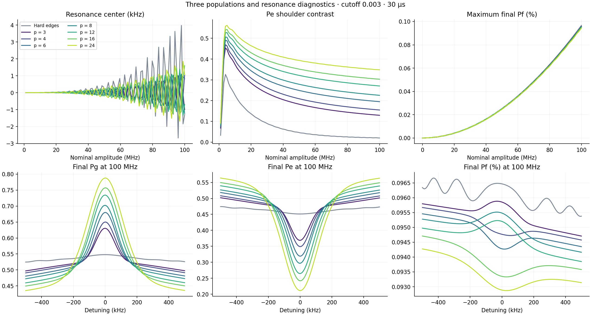
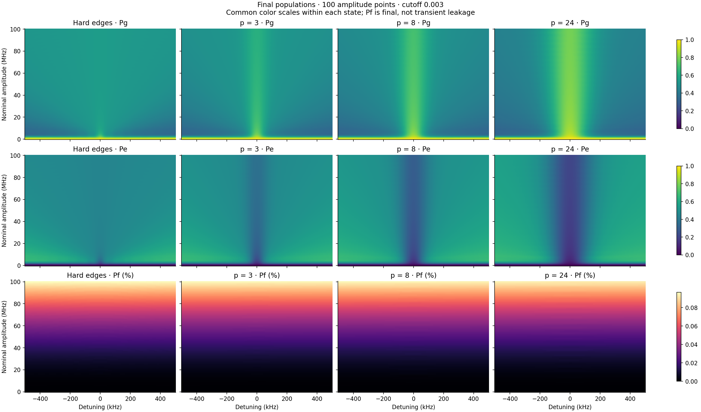
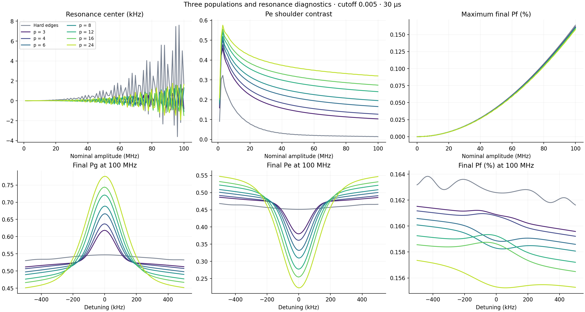

Three-level Lindblad simulation · 30 µs · β = −0.5 · 16 ns sine echo transition · 100 amplitudes from 0 to 100 MHz.
The screenshot shows the existing cubic window. This scan tests wp(t) = [1 − (2t/L)²]p inside |t| < L/2 and zero outside, with p = 3, 4, 6, 8, 12, 16, 24. Each tested window has zero value, first derivative, and second derivative at the endpoints.
“Best” maximizes the minimum ideal SNR/FWHM across the 50 sampled amplitudes from 50.505–100 MHz. It is a heuristic sharpness score, not a frequency uncertainty or a global optimum over possible window functions. The table separately reports width and SNR, so a tradeoff is visible.
At cutoff 0.001, p = 8 is a useful tested compromise: all 50 high-amplitude points satisfy the illustrative targets width ≤ 200 kHz and ideal SNR ≥ 10. The cubic window keeps a narrower dip under the previous ±0.5 MHz linewidth definition. Larger powers improve visibility while broadening that measured width. The targets are examples, not experimental requirements.




| Cutoff | Window | FWHM at 100 kHz | SNR at 100 | Center at 100 kHz | Worst FWHM 50–100 MHz, kHz |
Min SNR 50–100 MHz | Min SNR/width MHz⁻¹ |
Width ≤ 200 kHz SNR ≥ 10 | Pareto |
|---|---|---|---|---|---|---|---|---|---|
| 0.001 | Hard edges | 506.02 | 2.50 | +1.009 | 506.02 | 2.50 | 4.94 | 0/50 | |
| 0.001 | p = 3 | 152.85 | 7.30 | -0.758 | 152.85 | 7.30 | 47.75 | 3/50 | yes |
| 0.001 | p = 4 | 155.00 | 8.21 | -0.321 | 155.00 | 8.21 | 52.94 | 14/50 | yes |
| 0.001 | p = 6 | 163.47 | 9.61 | +0.910 | 163.54 | 9.61 | 58.76 | 40/50 | yes |
| 0.001 | p = 8 | 173.53 | 10.68 | +0.591 | 173.53 | 10.68 | 61.57 | 50/50 | yes |
| 0.001 | p = 12 | 192.48 | 12.28 | -1.105 | 192.48 | 12.28 | 63.79 | 50/50 | yes |
| 0.001 | p = 16 | 209.17 | 13.47 | -0.793 | 209.17 | 13.47 | 64.40 | 15/50 | yes |
| 0.001 | p = 24 | 239.67 | 15.18 | +1.502 | 239.98 | 15.18 | 63.35 | 0/50 | yes |
| 0.003 | Hard edges | 357.94 | 0.63 | -1.291 | 483.91 | 0.63 | 1.76 | 0/50 | |
| 0.003 | p = 3 | 160.57 | 4.16 | -1.000 | 160.57 | 4.16 | 25.90 | 0/50 | yes |
| 0.003 | p = 4 | 165.99 | 5.01 | +1.081 | 166.37 | 5.01 | 30.19 | 0/50 | yes |
| 0.003 | p = 6 | 178.22 | 6.38 | +0.816 | 178.71 | 6.38 | 35.77 | 0/50 | yes |
| 0.003 | p = 8 | 191.01 | 7.45 | -1.231 | 191.01 | 7.45 | 38.99 | 0/50 | yes |
| 0.003 | p = 12 | 213.28 | 9.08 | -0.695 | 213.28 | 9.08 | 42.60 | 1/50 | yes |
| 0.003 | p = 16 | 232.00 | 10.32 | +1.603 | 232.76 | 10.32 | 44.47 | 0/50 | yes |
| 0.003 | p = 24 | 266.28 | 12.11 | +1.068 | 267.31 | 12.11 | 45.48 | 0/50 | yes |
| 0.005 | Hard edges | 468.22 | 0.45 | +1.616 | 468.22 | 0.45 | 0.96 | 0/50 | |
| 0.005 | p = 3 | 167.03 | 3.33 | -0.776 | 167.03 | 3.33 | 19.94 | 0/50 | yes |
| 0.005 | p = 4 | 173.30 | 4.11 | -1.057 | 173.30 | 4.11 | 23.71 | 0/50 | yes |
| 0.005 | p = 6 | 186.14 | 5.40 | +1.223 | 186.68 | 5.40 | 28.99 | 0/50 | yes |
| 0.005 | p = 8 | 198.95 | 6.43 | +1.320 | 199.54 | 6.43 | 32.31 | 0/50 | yes |
| 0.005 | p = 12 | 223.34 | 8.02 | -1.099 | 223.34 | 8.02 | 35.93 | 0/50 | yes |
| 0.005 | p = 16 | 244.26 | 9.24 | -1.474 | 244.26 | 9.24 | 37.81 | 0/50 | yes |
| 0.005 | p = 24 | 279.02 | 11.03 | +1.648 | 280.02 | 11.03 | 39.45 | 0/50 | yes |





The base envelope is [1+(t/σ)²]−1/2, with σ = 15 µs / √(cutoff−2−1). T₁ = 51.24 µs, T₂ = 7.31 µs, α = −216 MHz, no added Stark correction. I = A f(t)s(t)w(t) and Q = −β(dI/dt)/(2π|α|). DRAG differentiates the complete windowed envelope. The 30 µs duration, nominal amplitude and base σ remain fixed.
FWHM is measured at half depth relative to a linear background from |detuning| ≥ 0.4 MHz. Ideal SNR assumes perfect binary Pe readout with 500 shots at the center and 250 at each of ±0.45 MHz. Readout errors, drift, technical noise, and the cost of locating the center are omitted. Zero amplitude has no dip. The 43.5 kHz CW value 1/(πT₂) is a reference, not a lower bound on an echo notch.
Changing p changes the effective duration and unsigned pulse area. The base cutoff still sets σ: this modification does not eliminate cutoff dependence. Equal-area controls rescale the p = 3 amplitude and are a separate diagnostic.
At cutoff 0.001, p = 8 at nominal 100 MHz has the same unsigned I area as p = 3 at 93.19 MHz. On the refined grid these give 173.49 vs 151.90 kHz, and ideal SNR 10.69 vs 7.58. The width–visibility tradeoff survives area matching. Smooth endpoints alone do not guarantee a narrower dip.
5 selected cases checked at 50.505, 74.747, 100 MHz: halving dt to 0.25 ns changes widths by at most 8.06 Hz; halving detuning spacing to 2.5 kHz adds at most 64.37 Hz. See validation.json for equal unsigned-I-area controls. Case c0.005_p24 has a maximum population change of 0.00017 between 0.5 and 0.25 ns, exceeding the stricter 1e−4 population threshold. Refining from 0.25 to 0.125 ns reduces that change to 5.2e-06 (a factor of 31.8); the additional width change is 0.26 Hz. Primary maps retain 0.5 ns sampling.
All main arrays have shape 3 × 100 × 201. The original hard and p = 3 cases were rerun and compared numerically with the previous study. The main solver uses 0.5 ns RK4 steps.
All metrics CSV · Summary · Parameters and reproducible commands · Array and baseline checks · Convergence and area controls · Shoulder sensitivity · Pulse areas · Software checks
54 focused regression tests passed, including product-rule DRAG and native/NumPy agreement. Scoped Ruff checks passed. The full suite is blocked at collection by missing PyTorch in the test environment; repository-wide lint reports 692 existing findings outside the changed files.